CAPÍTULO 3 - Equações
Equações do 2.o grau na forma reduzida
Juliana resolveu comprar um aquário de base quadrada que deverá ter 40 cm de altura. Sabendo que o volume desse aquário é igual a 144 000 cm3, qual é a medida do comprimento e da largura dele?
Reinaldo Rosa / Acervo da Editora.
1.Troque ideias com um colega e expliquem como calcular as medidas do comprimento e largura desse aquário.
2.Ao escrever a igualdade que nos permite calcular a medida da largura e do comprimento, temos representada uma equação. Ela é uma equação do 1.º grau? Explique.
3.Qual será a medida do comprimento e da largura desse aquário?

A equação utilizada para resolver esta situação-problema denomina-se equação do 2.º grau.
Observe outros exemplos:
►8x2 + x = 0
►x2 + 6x + 9 = 0
►11y2 + y - 2 = 0
►8m2 = 64
►z2 - 5z = 0
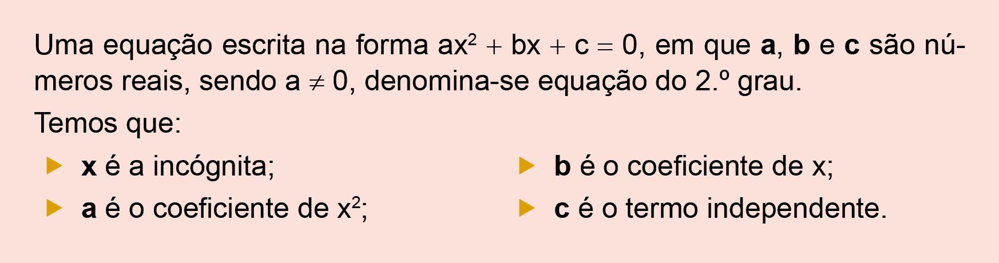
Se uma equação está escrita na forma ax2 + bx + c = 0 dizemos que ela está representada na sua forma reduzida. Observe:
► x2 + 10x + 25 = 0 em que a = 1, b = 10 e c = 25.
A equação a seguir não se apresenta na forma reduzida.
► 2x2 - 12x = x + 24
202
Por isso, para podermos identificar os valores dos coeficientes a, b e c vamos escrevê-la na sua forma reduzida.
2x2 - 12x = x + 24
2x2 - 12x - x - 24 = 0
2x2 - 13x - 24 = 0, em que a = 2, b = - 13 e c = - 24
Dessa forma, esta equação é completa, pois b e c são diferentes de zero.
Em algumas equações podemos ter os coeficientes b e c iguais a zero. Quando isso ocorre denominamos estas equações como sendo equações incompletas, ou seja, equações escritas na forma:
►ax2 + bx = 0, quando c = 0;
►ax2 + c = 0, quando b = 0.
Observe alguns exemplos de equações incompletas:
►8x2 + 9x = 0 a = 8, b = 9 e c = 0
►25x2 - 49 = 0 a = 25, b = 0 e c = - 49
►-10x2 - 5x = 0 a = -10, b = - 5 e c = 0
►- 3x2 + 27 = 0 a = - 3, b = 0 e c = 27

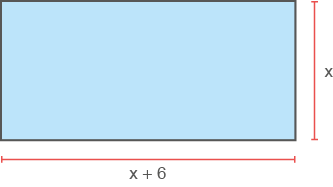
2.Identifique, nas equações a seguir, os valores dos coeficientes a, b e c.
Escreva-os no caderno.
a)4x2 - 12x + 9 = 0
b)3m2 + 81m = 0
c)18y - 5y2 + 3 = 0
d)32 - 4z2 = 0
e)18 + 7x - 14x2 = 0
f) -1 - p2 = 0
g)- 8t + t2 = 0
3.Em seu caderno, escreva as equações na sua forma reduzida e classifique-as em completas ou incompletas.
-
a)x + 2 = (x - 4)(x - 5)
b)8(x2 - 1) = 4(x2 + 1)
- 7x - 3x2 + 10 = x2 - 8x a)(x + 3)(x - 3) = 7
c)15(x - 1) = 4x2 - 15
d)(x - 3)2 + (x + 3)2 = 10
e)(3x + 6)(3x - 6) = (x + 2)2
4.Em seu caderno, escreva as equações a seguir na sua forma reduzida.
b)x(3x - 5) + 4x2 = -11x + 9
c)(y + 5)2 + (y - 5)2 = 10y + 2
d)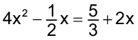
e) 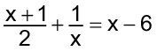
203
Resolução de equações incompletas do 2.o grau
Resolução de equações do 2.o grau quando b = 0
Joana aproveitou um espaço livre em seu terreno e construiu um jardim, em forma retangular, com área igual a 48 m2. Sabendo-se que o comprimento desse jardim é igual ao triplo da medida da largura, quais são as suas dimensões?
Reinaldo Rosa / Acervo da Editora.
Vamos representar a área desse jardim algebricamente:
A = x ∙ 3x = 3x2
Como a área é igual a 48 m2, temos a seguinte igualdade:
3x2 = 48
Para resolver uma equação do 2.º grau em que b = 0, devemos isolar a incógnita no primeiro membro, observe:
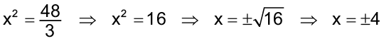
Dessa forma, temos que - 4 e + 4 são raízes da equação 3x2 = 48 e representamos o seu conjunto-solução por S = {- 4, 4}.
Porém, como a equação representa uma situação-problema em que buscamos as dimensões de um jardim, o número - 4 não convém como resposta, pois o problema refere-se a uma medida. Portanto, a medida que estamos procurando é igual a 4 m.
As dimensões desse jardim são 4 m e 12 m.
Observe a seguir a resolução de outras equações incompletas em que b = 0.
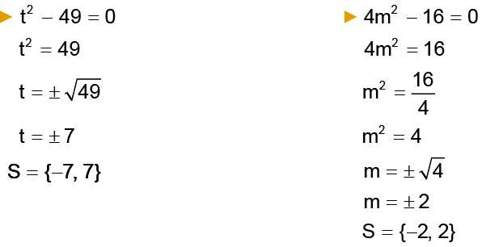
204
Resolução de equações do 2.o grau quando c = 0
Vamos encontrar as raízes da equação x2 - 7x = 0.
Nessa equação, temos que c = 0. Para resolver uma equação reduzida, devemos fatorar, colocando o fator comum em evidência.
x2 - 7x = 0
x(x - 7) = 0
Temos que x e x – 7 são fatores de um produto que é igual a zero. Se um produto é nulo, pelo menos um dos fatores é nulo, assim devemos ter:
x = 0 ou x - 7 = 0 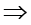 x = 7.
Portanto, as raízes da equação são 0 e 7.
Observe a seguir, a resolução de outras equações incompletas em que c = 0.
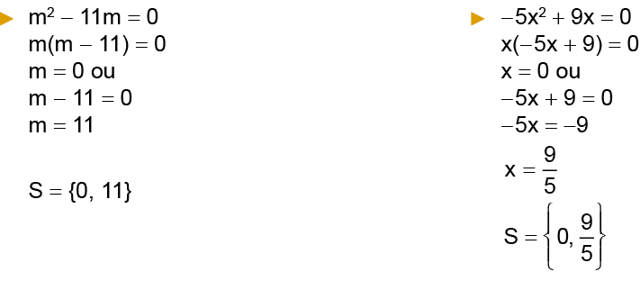
a)x2 - 25 = 0
b)5x2 - 36 = x2
c)x2 - 85 = - 4
d)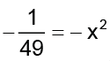
e)x2 - 600 = 300
f) -108 + 3x2 = 0
g)12(x2 - 1) = 4(x2 + 1)
h)2x + 16 = x(x + 2)
2.Marcos pegou uma cartolina retangular de 40 cm de comprimento por 60 cm de largura e cortou pedaços quadrados, iguais nos cantos, obtendo assim uma figura em forma de cruz. Se a área da cruz é igual à metade da área retangular original, determine a medida do lado do quadrado.
3.Determine o conjunto-solução das equações a seguir:
a)x - x2 = 0
b)11x2 = 7x
c)x(x - 1) = 0
d)- 8x + 16x2 = 0
205
f) 7x2 + 6 = 6 + 4x
g)3x2 - 5 = 5(x - 1)
h)(x - 2)(x - 3) = 6
4.Reúna-se com um colega e criem um problema que possa ser representado pela equação x² - 121 = 0. Em seguida, troquem o problema com outra dupla para que eles resolvam a situação elaborada por vocês e vocês a deles.
6.Pesquise na internet aplicativos que podemos utilizar para resolver, de forma algébrica e gráfica, as equações do 2.º grau. Depois, compartilhe com os seus colegas as suas descobertas.
-
7.(OBMEP) Escreva os números de 0 a 9 nos círculos, de forma que eles cresçam no sentido anti-horário. Em seguida, subtraia 1 dos números ímpares e some 1 aos números pares. Escolhendo três círculos consecutivos, qual é a maior soma que se pode obter?
a)21
a)23
a)25
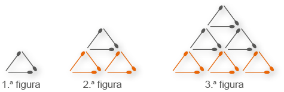
a)39
a)42
a)48
206

- Princípio multiplicativo ou princípio
fundamental da contagem
Carla e Juliana foram ao shopping fazer compras. Carla comprou 3 blusas, 2 calças e 2 pares de sapatos. Se Carla escolher uma blusa, uma calça e um par de sapatos para sair, serão quantas possibilidades de escolhas diferentes?
Reinaldo Rosa/Acervo da Editora
- Troque ideias com um colega e escrevam, no caderno, quantas possibilidades de escolhas diferentes que Carla tem.
- Expliquem como vocês realizaram esse cálculo.
Agora, observe as situações a seguir:
Situação 1
Daniel foi a um restaurante almoçar e ele pode escolher entre 2 pratos executivos, um com frango e outro com peixe, 2 sucos (laranja ou uva) e 3 sobremesas (frutas, pudim ou mousse). Como ele deverá escolher somente 1 prato executivo, 1 suco e 1 sobremesa, quantas possibilidades de escolha ele tem?
Reinaldo Rosa/Acervo da Editora
Vamos representar essa situação por meio de um diagrama de árvore.
![Um diagrama de árvore dividido em três partes com flechas azuis. Na primeira, 2 possibilidades de prato; na segunda, 2 possibilidades de suco; na terceira, 3 possibilidades de sobremesa. Na primeira parte, duas flechas, uma aponta para Prato executivo com frango. A outra aponta para Prato executivo com peixe. Do prato executivo com frango, duas flechas apontam para as possibilidades da segunda parte: uma para suco de laranja; outra para suco de uva. Do prato executivo com peixe, duas flechas: Uma para suco de laranja; outra para suco de uva. Da primeira opção de suco de laranja com o prato executivo de frango, três flechas apontam para as 3 possibilidades de sobremesa: frutas; pudim; mousse. Da primeira opção de suco de uva com o prato executivo de frango, três flechas apontam para as 3 possibilidades de sobremesa: frutas; pudim; mousse. Da segunda opção de suco de laranja com o prato executivo de peixe, três flechas apontam para as 3 possibilidades de sobremesa: frutas; pudim; mousse. Da segunda opção de suco de uva com o prato executivo de peixe, três flechas apontam para as 3 possibilidades de sobremesa: frutas; pudim; mousse. Uma linha azul na vertical delimita as opções ao final do diagrama à direita seguida da frase: 12 possibilidades de escolha.](../../resources/images/8ANO_U8_image/U9_01.png)
207
Por meio do diagrama de árvore, podemos representar todas as possibilidades.
Ou ainda podemos pensar:
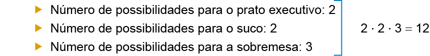
Portanto, Daniel tem 12 possibilidades de escolhas diferentes.
Situação 2
Rogério quer formar números diferentes com 3 algarismos usando somente os algarismos 1, 2, 3 e 4, sem repeti-los. Quantos números poderão ser formados?
Vamos representar essa situação por meio de um diagrama de árvore,
Portanto, Rogério poderá formar 24 números diferentes.
![Um diagrama de árvore dividido em três partes com flechas azuis. Na primeira, 4 possibilidades de numeração; na segunda, 3 possibilidades de numeração; na terceira, 2 possibilidades de numeração. Na primeira parte, quatro flechas, uma aponta para o número 1; outra para o número 2; outra para o número 3; a última aponta para o número 4. Do número 1 saem 3 números: 2; 3; 4. Do número 4 saem 3 números: 1; 2; 3. Do número 2, vindo da opção 1, os números 3, 4. Do número 3, vindo da opção 1, os números 2, 4. Do número 4, vindo da opção 1, os números 2, 3. Do número 1, vindo da opção 2, os números 3, 4. Do número 3, vindo da opção 2, os números 1, 4. Do número 4, vindo da opção 2, os números 1, 3.
Do número 1, vindo da opção 3, os números 2, 4. Do número 2, vindo da opção 3, os números 1, 4. Do número 4, vindo da opção 3, os números 1, 2.
Do número 1, vindo da opção 4, os números 2, 3. Do número 2, vindo da opção 4, os números 1, 3. Do número 3, vindo da opção 4, os números 1, 2.
Uma linha azul na vertical delimita as opções ao final do diagrama à direita seguida da frase: 24 possibilidades de escolha.](../../resources/images/8ANO_U8_image/U9_02.png)
lembrando que os algarismos não podem ser repetidos em um mesmo número.
Ou ainda podemos pensar:
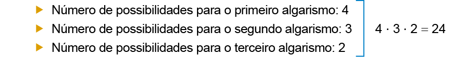
208
3. Para ir de um acampamento A para um acampamento B, um escoteiro dispõe de 5 trilhas diferentes, enquanto que para ir de B ao acampamento C, existem 3 trilhas distintas, sendo que qualquer trajeto escolhido para ir de A a C passa obrigatoriamente por B. Quantos caminhos diferentes esse escoteiro pode percorrer para ir de A a C?
4. Em dupla, calculem quantos números de 4 algarismos distintos podemos formar usando os algarismos 1, 2, 3, 4, 7 e 8.
5. Em uma sala, há 4 cadeiras e 5 pessoas. Quantos modos distintos existem para essas pessoas ocuparem as cadeiras?
6. No Brasil, as placas de carros são formadas por 3 letras do nosso
S.I./Acervo da Editora
mais 4 algarismos. Sabendo que não existe uma placa formada por 4 zeros, determine quantas placas possíveis podem ser utilizadas no emplacamento dos carros.
7. (ENEM) No Nordeste brasileiro, é comum encontrarmos peças de artesanato constituídas por garrafas preenchidas com areia de diferentes cores, formando desenhos. Um artesão deseja fazer peças com areia de cores cinza, azul, verde e amarela, mantendo o mesmo desenho, mas variando as cores da paisagem (casa, palmeira e fundo), conforme a figura. O fundo pode ser representado nas cores azul ou cinza; a casa, nas cores azul, verde ou amarela; e a palmeira, nas cores cinza ou verde. Se o fundo não pode ter a mesma cor nem da casa nem da palmeira, por uma questão de contraste, então o número de variações que podem ser obtidas para a paisagem é:
Sergio Bonfim/Acervo da Editora
a) 6
b) 7
c) 8
d) 9
e) 10
8 . (UNESP) Um turista, em viagem de férias pela Europa, observou pelo mapa que, para ir da cidade A à cidade B, havia três rodovias e duas ferrovias e que, para ir de B até uma outra cidade, C, havia duas rodovias e duas ferrovias. O número de percursos diferentes que o turista pode fazer para ir de A até C, passando pela cidade B e utilizando rodovia e trem obrigatoriamente, mas em qualquer ordem, é:
a) 9
b) >10
c) 12
d) 15
e) 20
209

- Resolva os sistemas a seguir:
a) 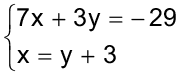
b) 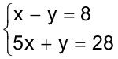
c) 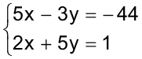
d) 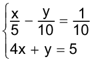
e) 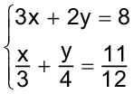
f) 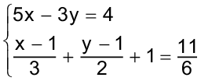
g) 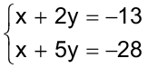
h) 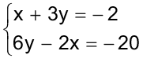
i) 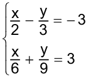
j) 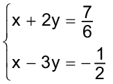
2. (ITA-SP) Suponha que x e y são números reais, satisfazendo simultaneamente às equações 2x + 3y = 21 e 7x - 4y = 1. Nessas condições, se
S = x + y, então:
a) S = 10
b) S = 8
c) S = 5
d) S = -8
e) S = 15
3. (UFMG) Uma prova de múltipla escolha com 60 questões foi corrigida da seguinte forma: o aluno ganhava 5 pontos por questão que acertava e perdia 1 ponto por questão que errava ou deixava em branco. Se um aluno totalizou 210 pontos, o número de questões que ele acertou é:
a) 25
b) 30
c) 35
d) 40
e) 45
4. (UFSC) Na partida de um campeonato de basquete, a equipe campeã venceu o jogo com uma diferença de 8 pontos. Quantos pontos assinalou a equipe vencedora, sabendo que os pontos assinalados pelas duas equipes estão na razão 23 para 21?
5. Joana precisa comprar lápis e caneta. Se comprar 5 lápis e 2 canetas, gastará R$ 27,10. Se comprar 3 lápis e 4 canetas, gastará R$ 29,70. Qual é o preço de cada lápis e cada caneta?
6. Meu irmão é 10 anos mais velho do que eu. O dobro da minha idade somado ao triplo da idade dele é igual a 190 anos. Qual é a idade de meu irmão?